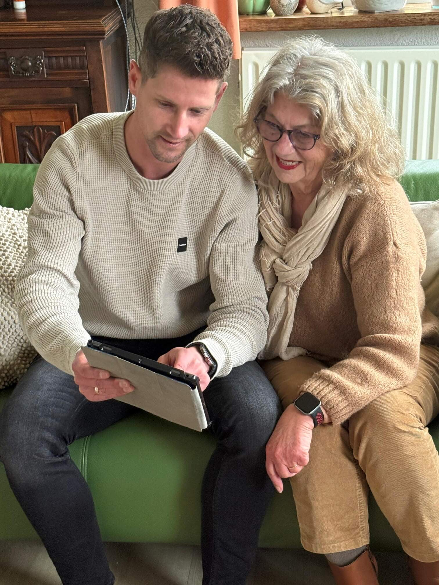

Overstap naar een nieuwe telefoon? Niets is zo frustrerend als data kwijt raken of apps die niet werken. Ik help u met een soepele overgang, inclusief veilig instellen van bank-apps.

Wat ik voor u doe:
- Apps & Foto's overzetten: Ik zet al uw apps, contacten en kostbare foto's veilig over van uw oude naar uw nieuwe telefoon of tablet.
- Bank-apps overzetten: Hulp bij het opnieuw registreren en activeren van de app van ING, Rabobank, ABN AMRO, SNS of RegioBank. Juist bij een nieuwe telefoon is dit vaak een lastige stap vanwege de beveiliging.
- WhatsApp behouden: Ik zorg dat al uw gesprekken en foto's uit WhatsApp netjes meegaan naar uw nieuwe toestel, zodat u niets kwijtraakt.
- Uitleg & Gebruik: Ik geef u een rustige uitleg over hoe uw nieuwe telefoon werkt, van het instellen van de ringtone tot het downloaden van nieuwe apps.
Hulp bij bank-apps & DigiD
Heeft u een nieuwe iPhone of Android telefoon gekocht? Dan werken beveiligde apps zoals DigiD en uw bank-app niet direct. Deze moeten vaak opnieuw gekoppeld worden met uw identiteitsbewijs of via een activatiecode. Ik help u hier stap voor stap bij, zodat u weer direct kunt inloggen bij de overheid en veilig kunt betalen bij uw eigen bank.
Ik kom onder andere langs in: Geldermalsen, Meteren, Tricht, Tiel, Culemborg, Beesd, Buren en omstreken.